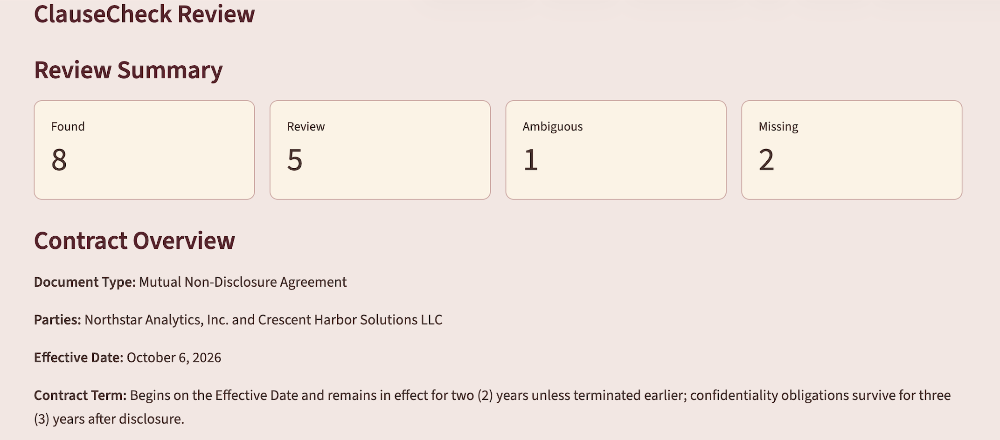
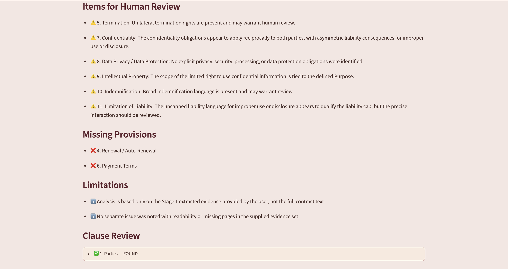
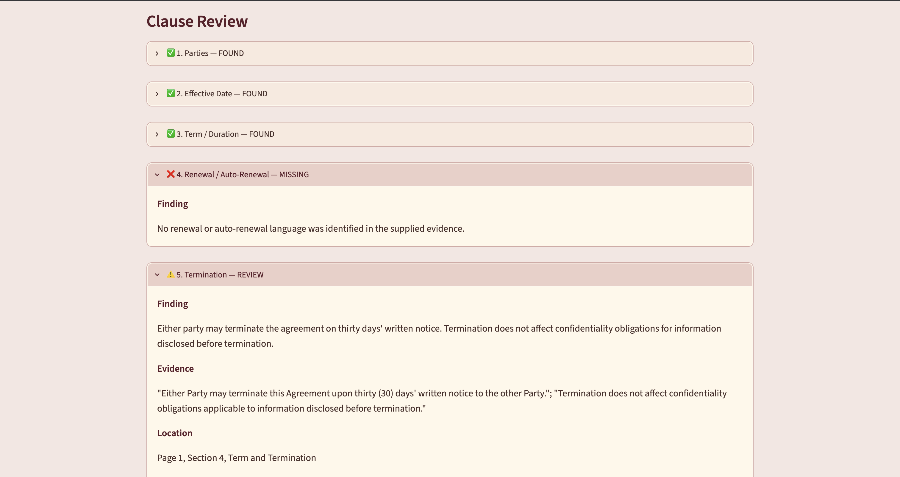
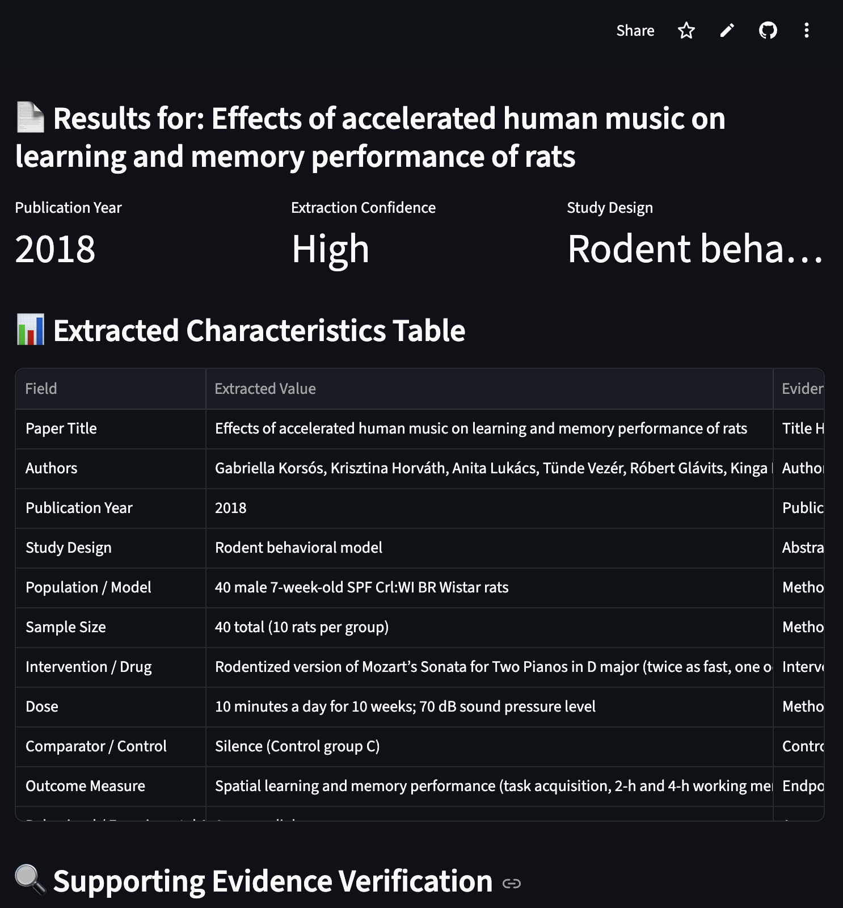

Tressa Montelli
AI, data analysis, research, and technical projects.
ClauseCheck: AI-Assisted Contract Review



ClauseCheck is an AI-assisted contract review tool I built to identify key provisions, retrieve supporting contract language, and surface ambiguous, missing, or potentially significant terms for human review. The application uses a two-stage AI pipeline to separate evidence retrieval from relationship analysis, followed by deterministic Python logic that assigns final review statuses.
Tools: Python, Streamlit, OpenAI API, Pydantic, PyPDF, Pandas, ReportLab
Key Skills Demonstrated
- Designed a two-stage LLM workflow separating full-contract evidence retrieval from downstream analysis
- Used structured Pydantic outputs to capture findings, evidence locations, and classification signals
- Moved final status classification into deterministic Python logic after testing exposed inconsistent model-generated labels
- Tested cross-clause relationships, overrides, missing dependencies, and ambiguous contract language using synthetic evaluation cases
- Implemented evidence traceability and human-review workflows for uncertain or potentially significant provisions
- Built PDF and CSV reporting for both human-readable and structured review outputs
View Live App
View Source Code
StudySifter: AI-Assisted Scientific Literature Extraction

StudySifter is an AI-assisted tool I built to extract consistent study characteristics from scientific research papers while preserving the source information needed for human review. Users can upload a PDF and receive structured study data along with supporting evidence, evidence locations, confidence levels, and ambiguity notes.
Tools: Python, Streamlit, Gemini API, Pydantic, Pandas
Key Skills Demonstrated
- Integrated the Gemini API with a Python application for direct PDF processing
- Defined structured LLM outputs using a Pydantic response schema
- Validated and transformed model output into structured tabular data
- Implemented source-grounding, uncertainty handling, and evidence traceability
- Added retry and backoff logic for API errors and rate limits
- Built and deployed an interactive Streamlit application with CSV export
View Live App
View Source Code
Spatial Analysis of Drug-Related Mortality and Naloxone Access in New York City

This interactive GIS project examines the spatial relationship between drug-related mortality and naloxone accessibility across New York City ZIP codes. Using QGIS, NYC Department of Health mortality data, and publicly available naloxone distribution site data, I created a choropleth map of drug-related deaths alongside clustered naloxone access locations and accessibility buffers.
Tools: QGIS, qgis2web, GitHub Pages, spatial joins, buffer analysis, choropleth mapping
Focus: Public health GIS, harm reduction access, spatial accessibility
Data sources: NYC Department of Health mortality data, NYC Health naloxone access data, and NYC ZIP code boundary data.
Key Skills Demonstrated
- Cleaned and joined public health data by ZIP code
- Mapped drug-related mortality using choropleth symbology
- Geocoded naloxone access locations into point data
- Created accessibility buffers around naloxone distribution sites
- Published an interactive web map using qgis2web and GitHub Pages
Limitations: The mortality variable reflects drug-related deaths or poisoning and may not capture opioid-only overdose mortality. Naloxone availability data may also exclude informal or non-public distribution channels.
View Interactive Map